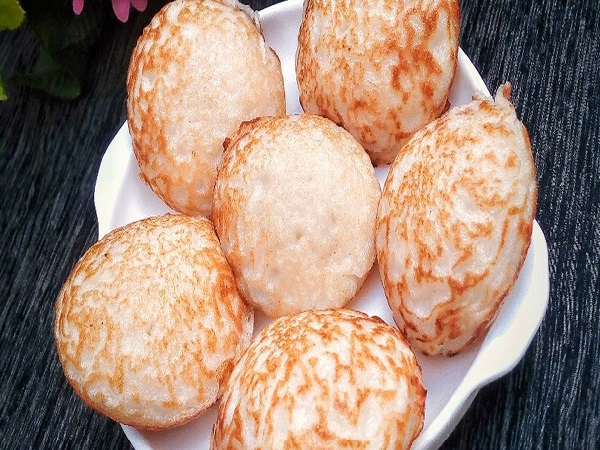

Hausa cuisines are traditional and modern food prepared by Hausa people. It is based on the availability of raw food materials they can farm or provide from other places. Most times Hausa people depend purely on the farm products they have cultivated for food preparations.
Some of the typical foods belonging to the hausas include Tuwo Shinkafa, Masa, Fura da Nono and many more. See below some recipes for sumptous hausa meals.
Tuwo Shinkafa
Tuwo shinkafa is a rice dish originating from the Hausas, which is popular in Northern Nigeria and Ghana. Ghanaians call it omo tuo . This rice, cooked until very soft, followed by mashing and rolling into balls is eaten with stew as a “swallow”.

Ingredients
- 2 cups Arborio rice
- Water
How to make Tuwo Shinkafa:
Wash the rice
Add the rice into a big pan with enough water to cover the rice grains, then place on medium heat.
As the liquid is absorbed, reduce the heat to low and test by pressing between your fingers; you want the rice to be very soft. If it is not that soft yet, add more water in small quantities. Repeat this until the rice is soft and soggy, with a bit of liquid left.
Reduce the heat to the lowest possible and use a wooden ladle to mash and fold the rice against the sides of the pot repeatedly until the grains come together to form a stiff dough. Remove from heat..
Serve by scooping with a spoon or taking bits of the dough with a wet hand and rolling between your palms to form balls. Serve with your favourite soup.
Masa is a maize dough that comes from ground nixtamalized corn. It is used for making corn tortillas, gorditas, tamales, pupusas, and many other Latin American dishes. It is dried and powdered into a flour form called masa harina. See below recipe:

Ingredients
- 3 cups rice
- 3 Tablespoons Rice Pre-cooked
- 2 Teaspoons Yeast Active dry
- A little bit of potash or about a Teaspoon of Baking Soda
- 4 Tablespoons Sugar more or less
- 1 Cup Water a little more or less + 1/4 Cup for proofing the Yeast
- Vegetable Oil
- Pinch of Salt
How to make Masa:
Soak the Rice for at least 8 hours or better still leave overnight
Rinse the Rice and blend it together with the pre-cooked Rice until creamy (remember to add the water before blending).
Proof the Yeast by mixing the Yeast, sugar and water and set aside
Add the Salt, Sugar and proofed Yeast to the Rice batter and mix together
Cover up the mixture for about 6 - 8 hours (you can as well leave overnight) - Use a very large bowl for this in order to save you from wasting your Rice and cleaning up your surface because the Rice mixture will rise so high before it collapses.
Add just a tiny bit of Oil in your Pan or skillet and fry.
Fry both side till golden brown and serve with Honey,Maple, Hot Sauce, Suya........ and ENJOY!.
Fura da nono is a local type of gruel made from millet balls (fura) and cow milk (nono). The milk is usually one that has been fermented and is usually very thick. Fura da nono has a sweet taste and some people prefer it to the regular yoghurt they sell which would have gone through some form of processing
Ingredients
- 1/2 cup millet
- 1/2 teaspoon each cloves, alligator pepper and ginger
- 4 cups Nono (Kafir Milk)
- Sugar – To taste
How to make Fura da Nono Drink:
Wash the millet and combine it with 1 cup of water, add in the spices and puree in a blender until very smooth (you can choose to briefly soak the millet in hot water for about 5 minutes to make blending easier)
Pour pureed millet into a pot, place on low-medium heat and stir until a dough forms.
Add 1 tablespoon of water to the millet dough, reduce heat to minimum and simmer for another 5 minutes.
Scoop millet dough into a bowl and set aside to cool.
Add in nono (kafir) and gently mash millet dough. Add sugar to taste. Serve cold.